| Home | | | Lunch And Dinner | | | | | Take-Out-SpecialOccassions-Catering |
| Nutritional information | Cost | About This Salad | SALADS |
|---|---|---|---|
| (per serving): About 370 calories, 10 g protein, 27 g carbs, 28 g fat (5 g saturated fat), 6 g fiber, 475 mg sodium | $18:95 | Roasting your cauliflower gives this earthy fall veg a super-sweet bite. | 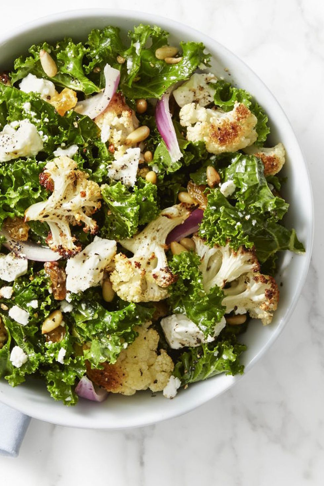 |
| (per serving): About 245 calories, 8.5 fat (3.5 g saturated), 31 g protein, 615 mg sodium, 11 g carbohydrates, 2 g fiber. | $22:00 | Fall is peak pear season, so load up on these sweet fruits to pair with a savory, spicy protein-packed main course. | 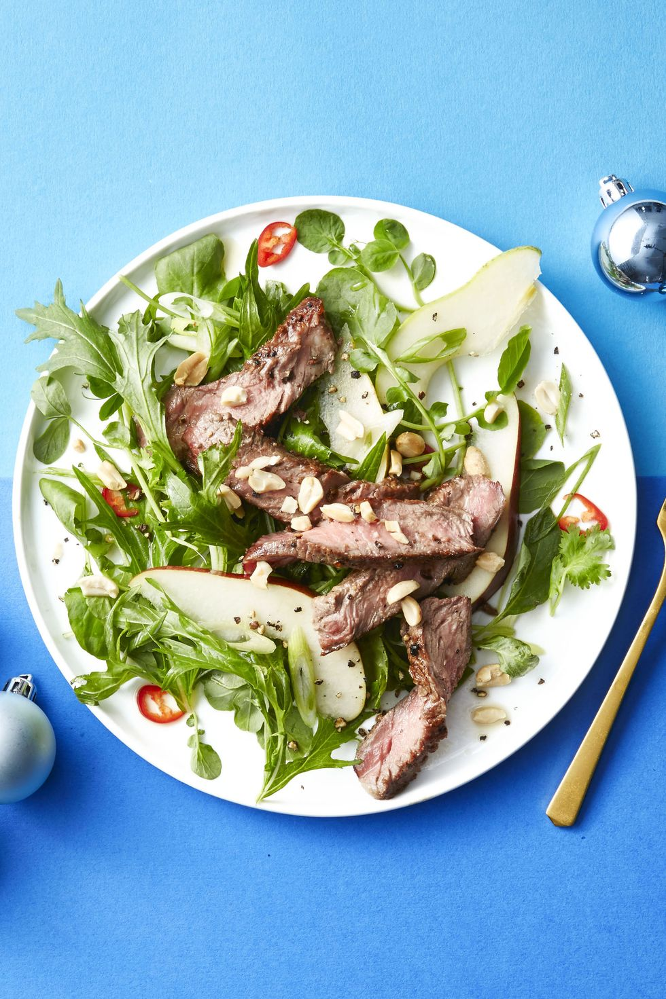 |
| (per serving): About 480 calories, 21 g protein, 48 g carbs, 24 g fat (4 g saturated fat), 11 g fiber, 990 mg sodium. | $20:00 | Flavor-packed salad layered with rotisserie chicken and creamy avocado. | 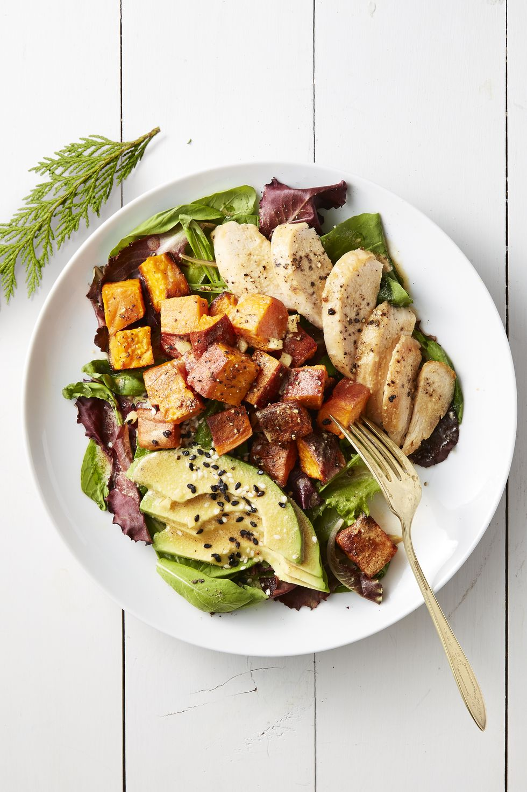 |
| (per serving): About 95 calories, 8.5 g fat (1.5 g saturated fat), 3 g protein, 105 mg sodium, 3 g carb, 1 g fiber | $18:95 | Sherry vinegar marinated onions create the base for the vinaigrette in this zingy green salad, topped off with crunchy hazelnuts. | 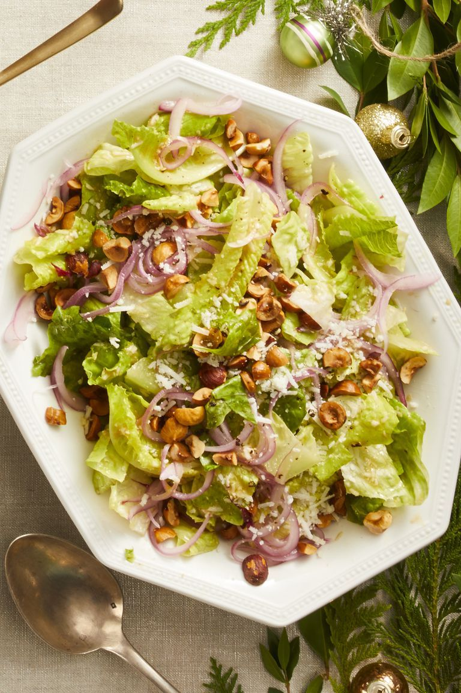 |
| Nutritional information | Cost | About This Meal | SOUPS |
|---|---|---|---|
| About 435 calories, 22 g protein, 53 g carbs, 16 g fat (1 g saturated fat), 9 g fiber, 925 mg sodium. | $16:95 | Looking for a healthy and hearty dinner to warm you up this winter? Here it is. | 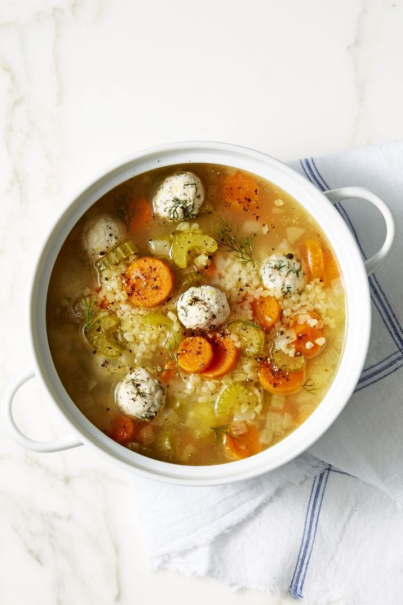 |
| (per serving): About 465 calories, 13 g fat (4 g saturated), 30 g protein, 455 mg sodium, 85 g carb, 40 g fiber | $16:95 | Consider this cozy soup your total fridge cleaner — just toss in whatever produce that's on the verge of going bad, let it simmer, and voilà, no one will notice those veggies were past their prime. | 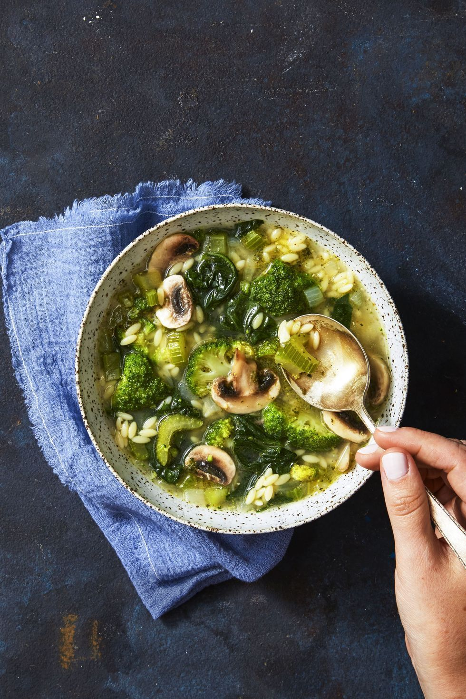 |
| (per serving): About 465 calories, 13 g fat (4 g saturated), 46 g protein, 775 mg sodium, 44 g carb, 13 g fiber | $16:95 | Let this hearty family-friendly casserole simmer all day long for maximum cozy flavor. | 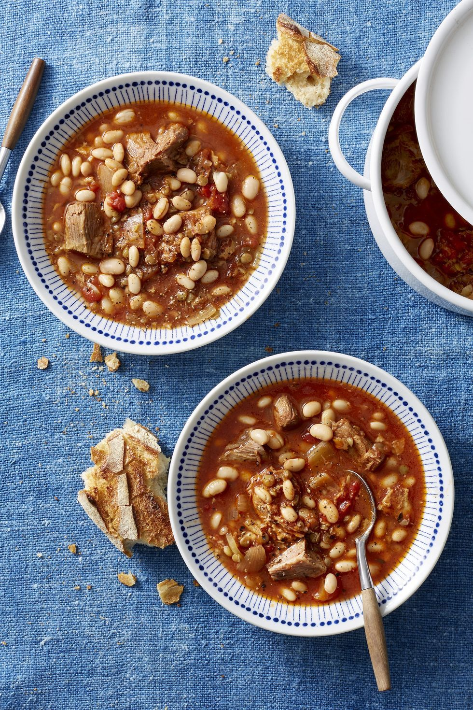 |
| (per serving): About 275 calories, 6g fat (4 g saturated), 20 g protein, 575 mg sodium | $16:95 | Made with tomatoes, shallots, butter, and chicken broth, this creamy tomato soup tastes 100x better than what comes out of a can. Plus, who needs grilled cheese when you have a crispy pepita-quinoa garnish? | 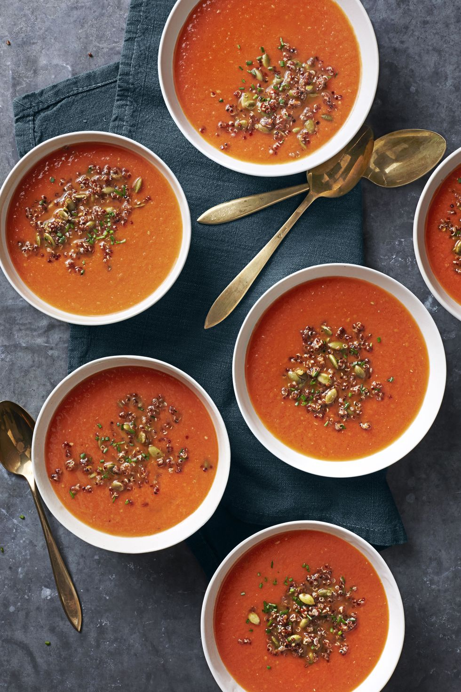 |
| Nutritional information | Cost | About This Meal | MEAL |
|---|---|---|---|
| (per serving): About 775 calories, 9g fat (4 g saturated), 40 g protein, 875 mg sodium | 24.95 | WORTH EVERY MINUTE, If only this perennial family favorite didn't take two and a half hours to prep and bake (and that's not counting the 15 minutes it needs, once it's out of the oven, to settle so it's easier to cut and serve). | 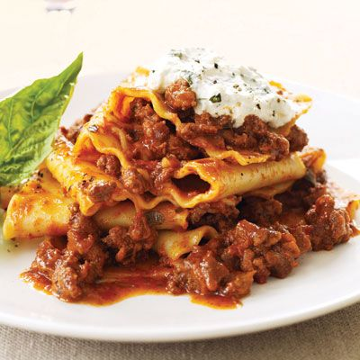 |
| (per serving): About 665 calories, 11 g fat (4 g saturated), 36 g protein, 698 mg sodium, 74 g carb, 18 g fiber | $26:95 | The Whole families loving this piece of the pie. Crust made from scratch. Veggies delite | 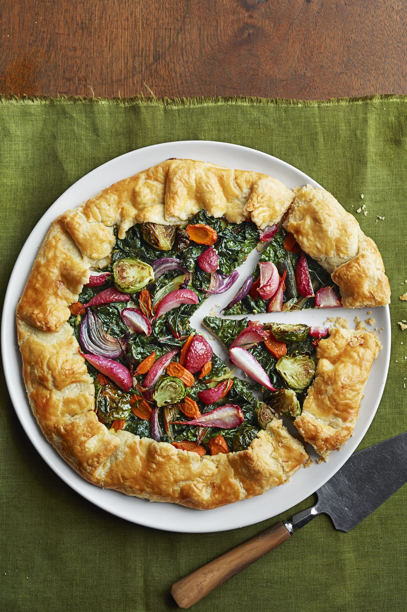 |
| (per serving): About 1265 calories, 25 g fat (4 g saturated), 46 g protein, 705 mg sodium, 45 g carb, 23 g fiber | $29:95 | Dinner feels like Desert with this Pot Pie. So wholesome | 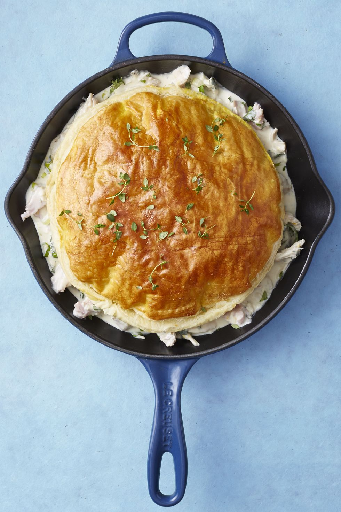 |
| (per serving): About 865 calories, 14 g fat (2 g saturated), 36 g protein, 575 mg sodium, 53 g carb, 19 g fiber | $22:95 | The best catch and the farm came with this meal. Get the best of both the sea and the land with every bite. | 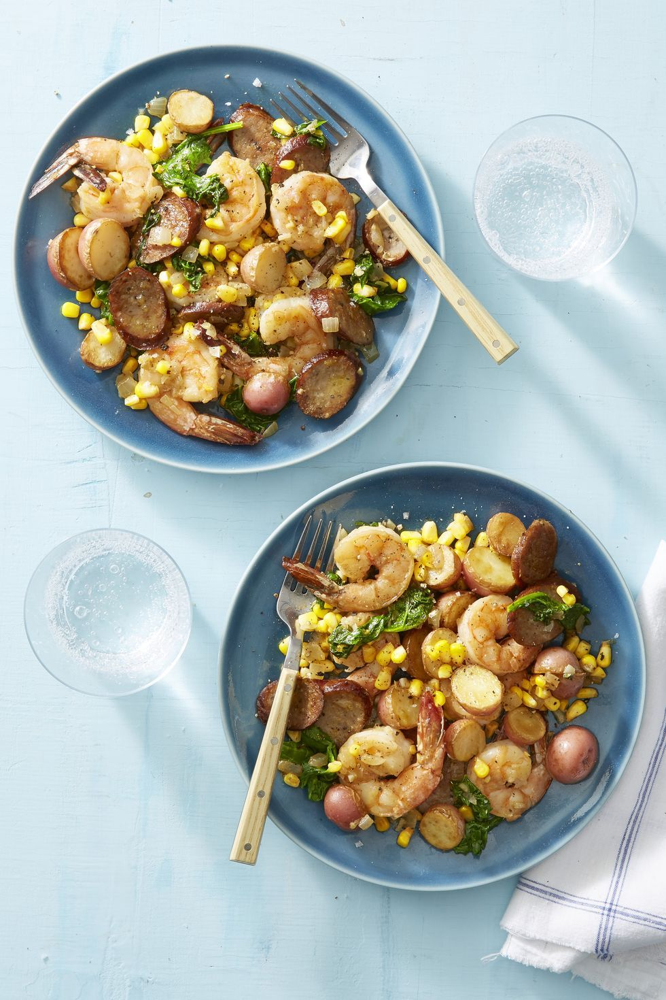 |